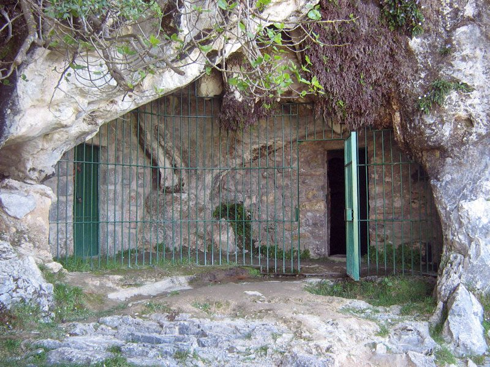
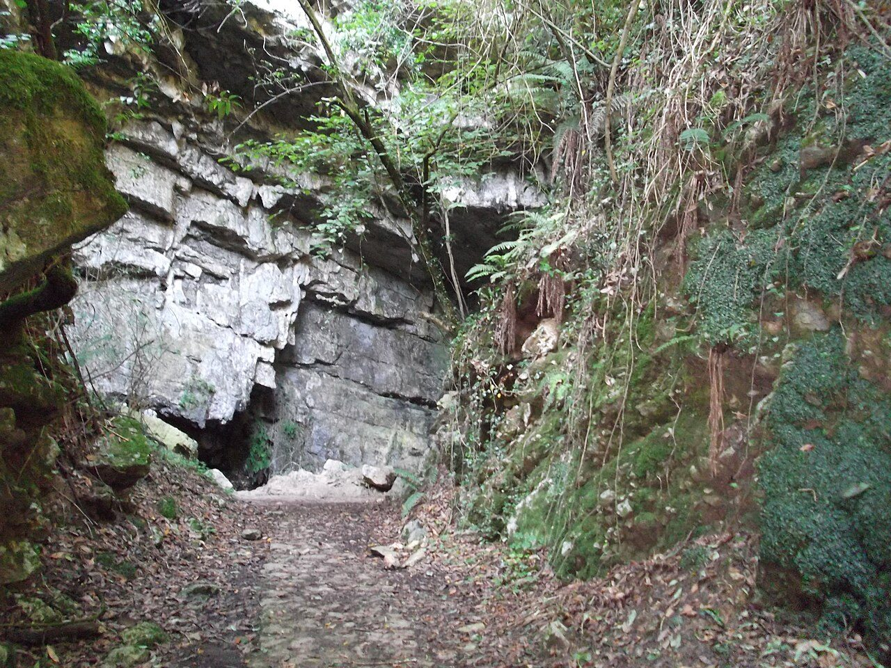
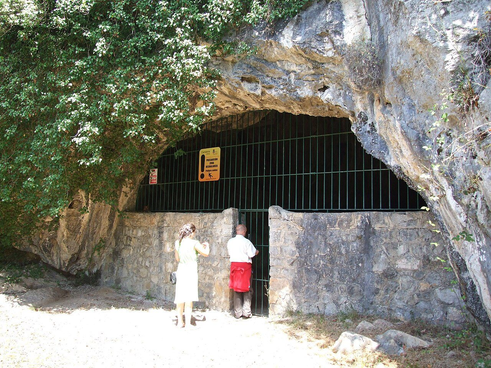

Covalanas, El Pendo y Hornos de la Peña
Criterios: PC 5.1, PC 2.1
🤔 Pienso5 min
Qué hago aquí: Piensa un momento y contesta con lo que ya sabes. No pasa nada si no lo sabes: es para empezar.
Escribe el nombre de todas las cuevas de Cantabria que conozcas. ¿Has visitado alguna? ¿Qué recuerdas?
📖 Leo y aprendo15 min
Qué hago aquí: Lee despacio, mira los dibujos y los ejemplos, y quédate con la idea clave del final.

Foto: Edward the Confessor · CC BY-SA 4.0 · Cueva de Covalanas.jpg

Foto: Codigowiki · CC BY-SA 3.0 es · Cueva de El Pendo.jpg

Foto: Vanbasten 23 · CC BY-SA 4.0 · Entrada a la Cueva de Hornos de la Peña.jpg
✏️ Hago25 min
Qué hago aquí: Haz las actividades en orden. Empieza siempre por las básicas.
Une cada cueva con lo que la hace única. Después elige una y explica qué técnica se usó en ella.
Elige la pareja de cada uno.
Explica cómo se pintaron las ciervas de Covalanas y por qué esa técnica la hace especial.
El friso de El Pendo no se descubrió hasta 1997, aunque la cueva se conocía y excavaba desde hacía mucho. ¿Cómo pudo pasar inadvertido? ¿Qué nos enseña sobre la investigación?
Escribe las diez cuevas Patrimonio de la Humanidad de Cantabria y agrúpalas por zonas (occidental, central, oriental) con ayuda de un mapa.
La Garma está cerrada incluso a las visitas con guía. Explica por qué y compara su caso con el de Altamira. ¿Qué tiene La Garma que la hace aún más frágil?
Diseña un itinerario de dos días para visitar tres cuevas de Cantabria con alumnos de otra comunidad: orden de visita, distancias aproximadas y qué observar en cada una.
✏️ Puedes responder escribiendo, con un dibujo o un esquema, o contándolo en voz alta.
Explica por qué pintura y grabado se conservan de forma distinta. ¿Cuál es más difícil de ver y cuál más fácil de dañar?
🚀 Amplío (si quieres saber más)
Qué hago aquí: ¿Has terminado? Lee la curiosidad o elige el reto. Es voluntario.
Investiga una cueva con arte de Cantabria que no aparezca en esta ficha (por ejemplo, Chufín, La Pasiega o Las Chimeneas). Haz su ficha con los mismos datos que las del libro y una explicación de qué aporta al conjunto del arte paleolítico.
✅ Compruebo5 min
Qué hago aquí: Contesta sin mirar la ficha y marca cómo lo llevas.